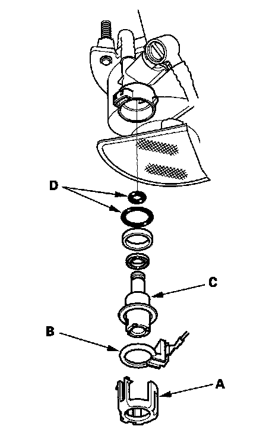

Fuel Pressure Regulator: Service and Repair
Fuel Pressure Regulator Replacement1. Remove the fuel tank unit.

2. Remove the bracket (A).
3. Remove the ground ring (B).
4. Remove the fuel pressure regulator (C).
5. Install the parts in the reverse order of removal with new O-rings (D) and a new bracket (A). When installing the fuel tank unit, align the marks on the unit and the fuel tank.
NOTE: Coat the O-rings with clean engine oil; do not use any other oil. Do not pinch the O-rings during installation.